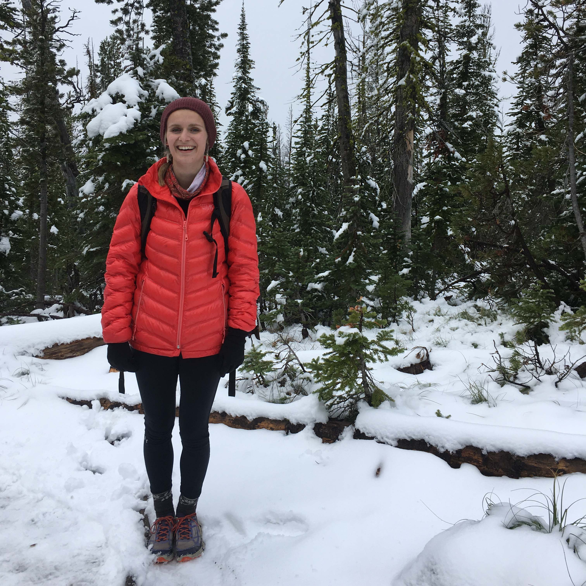
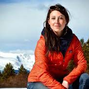
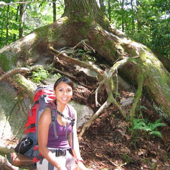

The Wild Times Summer Camp is the ultimate summer adventure camp for those who like spending their days in the wild and getting dirty. The Wild Times Camp is for young outdoor enthusiasts between the ages of 14 to 17 years old. Your days during this summer camp will be spent in the backcountry of Western Montana camping, kayaking, rock climbing, and hiking. You'll learn how to build fires, practice Leave No Trace (LNT) principles, identify plants, trees, birds, and other animals that live in Montana. During this week long camp, you'll also make close friendships with other rad people and learn from one another. Join us for a awe-inspiring and fun time! Bring your sunscreen, young folks!
Register for the 2019 Summer Camp!| Monday July 7th | Tuesday July 8th | Wednesday July 9th | Thursday July 10th | Friday July 11th | Saturday July 12 | Sunday July 13 | First Day of Camp! Backpacking into Heart Lake and setting up basecamp |
Identifying plants, animals, and backcountry safety and principles. Hiking out of Heart Lake |
Kayaking the Blackfoot River, Clif Diving, and More! | Rock climbing and bouldering | Camp Day at Glacier Lake | Learn from the Rangers and hike to St. Mary's Fire Lookout | Pack up and head home |
|---|
| Haley Eakin | Katy Elmer | Amy Corknever |
|---|---|---|
|  |  |  |
| Haley Eakin is excited be a camp counselor for the Wild Times this year. She will graduate from the University of Montana spring 2019 with a Bachelor's in Social Work and a BA in Women's, Gender, and Sexuality Studies. Haley loves working with young people and has been on the leadership team of wilderness outdoor camps in the past. Haley has been a big fan of the outdoors since childhood and has loves backpacking, mountain biking, hiking, kayaking, and skiing. Being outside takes big priority in her life! | Katy Elmer has been working in the outdoors industry for the past 10 years. After graduating college, she worked as a therapist with a Wilderness Therapy Program in Alaska. For the past 3 years, she has been a rockclimbing instructor in the summers and ski instructor in the winter. She is stoked to get a chance to be part of Wild Times and inspire passion about the outdoors. | Growing up in the city of New York, Amy Corknever thought that the outdoors were for her. But, after experiencing the magic of Colorado's mountains she knew she had to make a life change. She moved to Montana 6 years ago and has been spending all the time she can outside ever since. Amy has hiked the Pacific Crest Trail (PCT) the entire 2,600 miles from Mexico to Canada. She is passionate about learning about the outdoor landscapes and animals that surround us and about taking proper care of the wild spaces that we all love. |